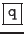

La commande « man » recherche dans les différentes sections (1,2,3,4,5,6,7,8,9,1m) le mot clef. Elle s'arrête sur le premier mot clef trouvé. Ainsi, par exemple, on verra systématiquement l'aide sur « passwd (1) » par la commande « man passwd »; pour voir « passwd(4) », il faudra taper la commande « man 4 passwd ». Une fois trouvée, elle affiche le contenu d'un fichier d'aide à l'écran en faisant de la pagination. Celui-ci correspond à la page de manuel associée.
| Pour passer à la ligne suivante | : | taper sur «
|
| Pour passer à l'écran suivant | : | taper sur «
|
| Pour quitter | : | taper sur « » ou «  » |
Syntaxe :
% man [n] commande
Où l'option « n » est le numéro d'une section
Remarque 1..4 :
Il est possible d'avoir une liste de commandes concernées par un mot clef de deux façons :
% man -k mot-clef(k comme keyword)
ou bien
% apropos mot-clef
Ceci ne fonctionnera que si l'administrateur a constitué la base de données référençant les mots clefs dans le manuel (fichier whatis).